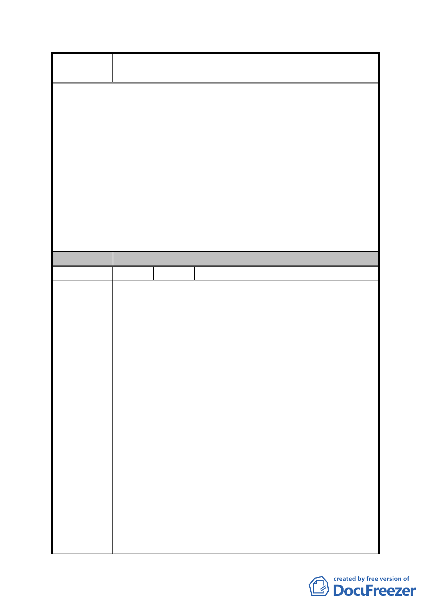

案
名
修訂臺北市「基隆河（中山橋至成美橋段）附近地區土地使
用分區與都市設計管制要點」（北段地區）計畫案
上之建築物立面寬度不得大於土地細分規模東西向境界
線長度之三分之一，修改為二分之一。
四、開發許可(三)：
1.取消左列各項限制 或
2.改為原則性規定，於個案提送都市設計審議時，視其基地
條件及規劃設計案內容合理性逐案審查即可。
五、臺北好好看申請案增加之獎勵容積之總合不得超過基準
容積之 50%（不含容積移轉基準容積之 20%）。
1.取消左列臺北好好看申請案各項限制； 並
2.增列臺北好好看申請案不受增加之獎勵容積總合不得超
過基準容積之50%之限制。
委 員 會 決 議 同編號 1。
編 號 27 陳情人 興富發建設股份有限公司（B2）
一、都市計畫審議過程：
本公司為配合市府政策，自 97 年 l0 月 6 日提送規劃構想
書至今，已進行至都市計畫與都市設計專案預審階段，期
間已投入大量時間與財力，力求本案之完善；若於此時因
細部計畫通盤檢討，必須大幅變更參與「臺北好好看」之
提案構想與建築設計，導致開發時程延宕，實為不宜。
「臺北好好看」開發計畫案之時程需於 2010 年 3 月前取
得建照，9 月 30 日前開工，各申請案於申請建照其間尚有
都市設計、環評及交評等其它相關審查；若本案細部計畫
修訂依「基隆河附近地區土地使用分區與都市設計管制要
陳 情 理 由 點」通盤檢討之時程，無法整合後續都市設計審議、環評
及交評等審查程序。
二、商娛區土地及建築物使用規定：
大內科工業區已開放作商業商務辦公使用，且租金低廉，
造成大彎北段地區之競爭力下降，商業辦公機能降低。
依建議修正條文，基地最小法定建蔽率(採用綜合設計放
寬規定者其建蔽率不得低於 40％)之建築面積乘以 3 倍為
120％。
本案配合「臺北好好看」，於建築物低層部留設地面層挑
空型開放空間，必將減少建築物低層部之商業使用面積。
若要達到 120%之商業使用面積，商業使用將超過五層樓以
- 81 -